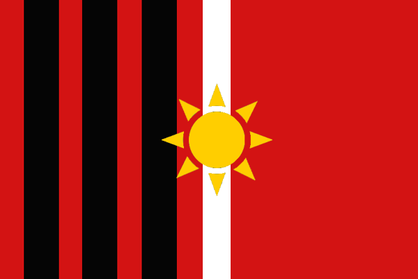

My name is Jazmin, and I go by Jaz. I was born in Bolivia and live in Achica Baja, a beautiful community located 3,800 masl, where I started my entrepreneurship in organic products. I love spending my time in nature and exploring science. My dream is to use my knowledge to help others with technology.

ACHICA BAJA - BOLIVIA:

The community of Achica Baja is located 6 kilometers from the city of Viacha. We usually have a cold climate. The fauna is varied, from rabbits, sheep, and cattle to pumas and the Andean cat.